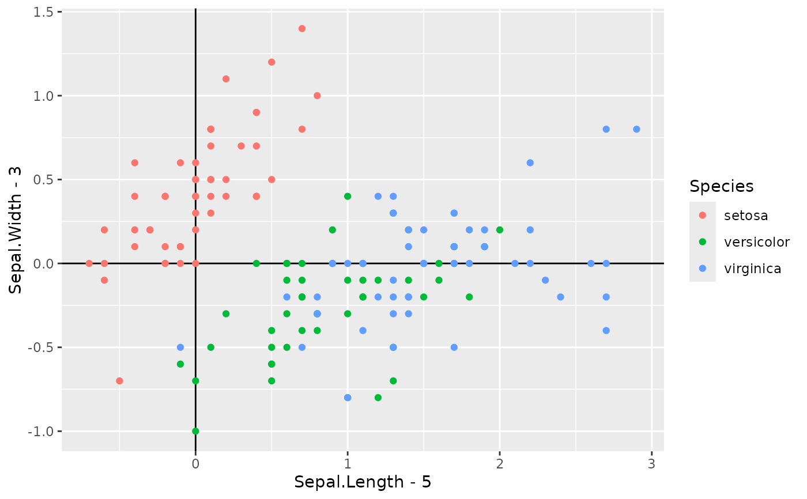
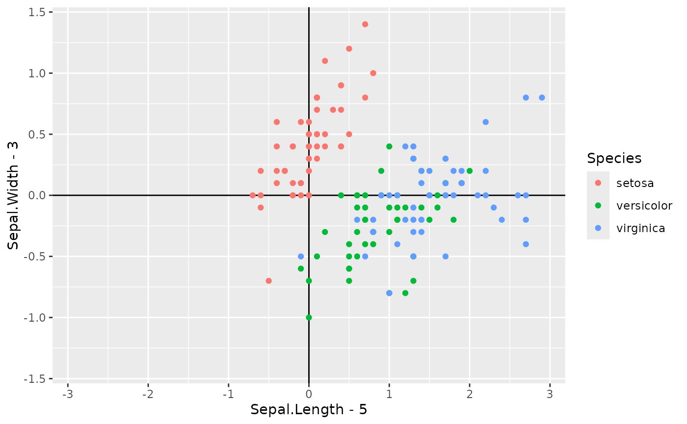

Expand scale limits to make them symmetric around zero.
Can be passed as argument to parameter limits of continuous scales from
packages {ggplot2} or {scales}. Can be also used to obtain an enclosing
symmetric range for numeric vectors.
Value
A numeric vector of length two with the new limits, which are always such that the absolute value of upper and lower limits is the same.
Examples
library(ggplot2)
ggplot(iris) +
aes(x = Sepal.Length - 5, y = Sepal.Width - 3, colour = Species) +
geom_vline(xintercept = 0) +
geom_hline(yintercept = 0) +
geom_point()

last_plot() +
scale_x_continuous(limits = symmetric_limits) +
scale_y_continuous(limits = symmetric_limits)
